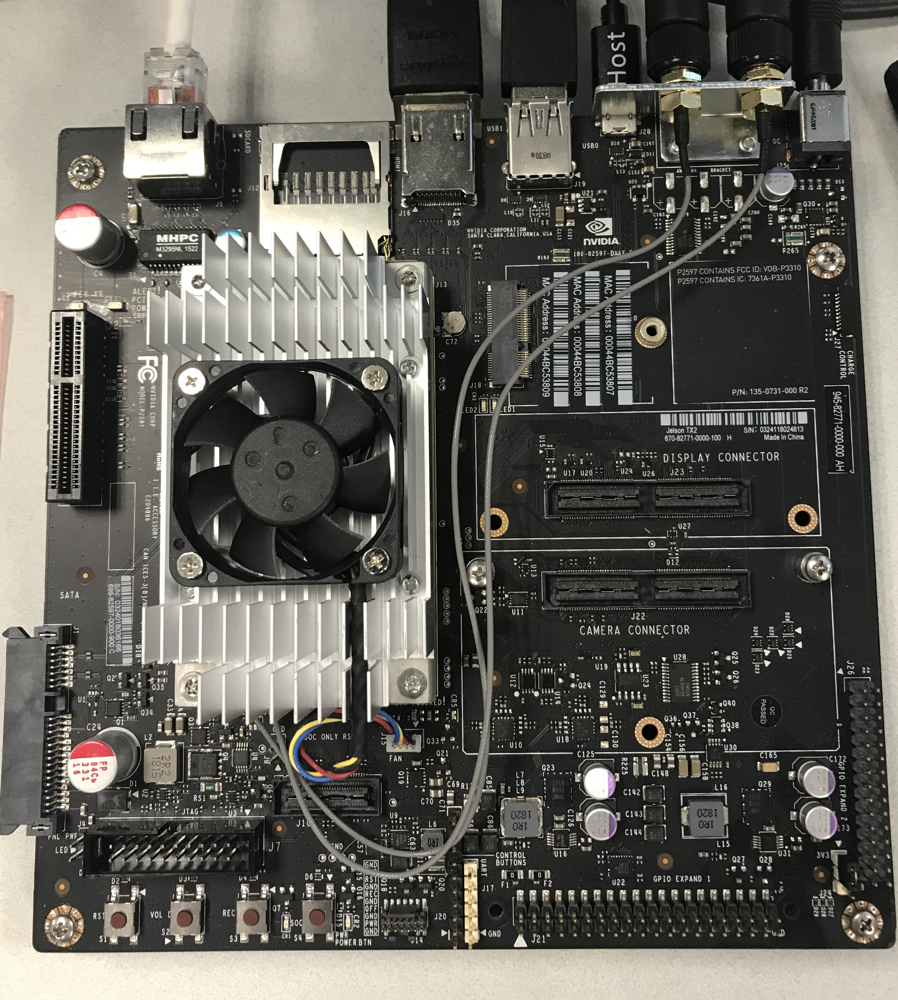
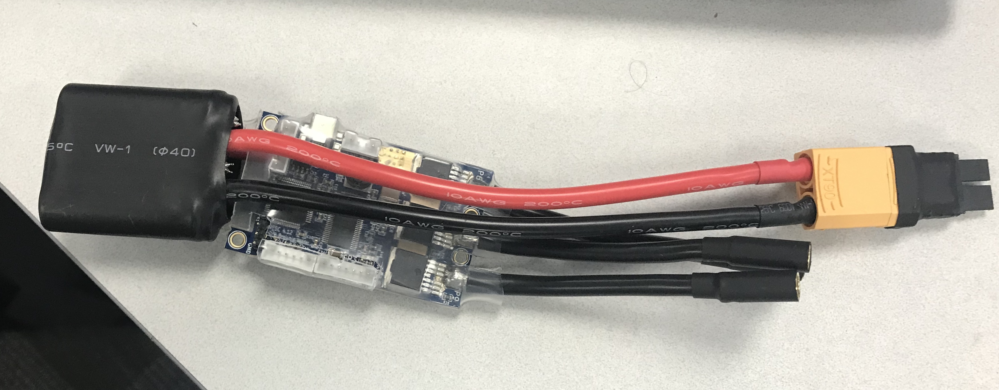

sundevil-f1/10car

We at Interactive Robotics Lab at ASU are working on RC-car based robotics platform for multi-agent research. We call it f1/10car which stands for Fast - 1/10th (scale) - Cooperative - Autonomous - Robot. This project is funded by Intel. It is based on Traxxas Slash 4x4 platinum RC-car, and inspired by the mit-racecar design.
In this post, I will be briefly describing the electronics hardware and software we are using in the car. For our application, we need an embedded GPU-processor which can handle computer vision and reinforcement learning networks, so we choose the TX2 development kit which is economical when compared to new Xavier board and can handle GPU computing.

For perception, we are using a ZED depth camera from stereo labs, which is a little older than the recent Intel’s realsense 435i depth camera. In terms of specifications, realsense is much smaller and has a better depth sensing in indoors due to its active IR stereo, but it has very less compatibility with cuda and getting it to work with the TX2 is a little difficult. For convenience, we moved forward with the zed camera. Since we are only using one forward camera, for localization and a 360-degree view we needed a single beam lidar. Slamtec Rplidar A3 is perfect in size and has ros compatibility within our budget. We also have a Velodyne VLP-16 lidar in the lab which I think is power hungry, heavy, and overkill for this project.

For state and pose estimation, we are using razor 9DOF imu.
Lastly, Slash 4x4 already comes with an Electronic Speed Controller (ESC) which has some limitations like the lowest speed it can work with 5 miles/hr which is not suitable for our application. This made us to replace it with VESC which is opensource and has ros support. VESC in the picture below is based on 4.12 hardware firmware.

In the later posts, I will be talking more about the design with some tutorials.